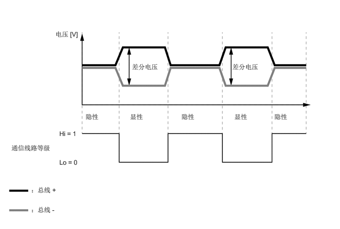

NM35K0CC
_57
电源/网络
_079493
网络系统
_0385296
多路通信系统 [AVC-LAN]
GE
概述
F
网络系统 多路通信系统 [AVC-LAN] 概述 概述
概述
a.
音频/视频通信局域网 (AVC-LAN) 通信与音响系统进行通信，可用作一个多路通信系统* 来简化车辆线束并达到高速通信。
- 提示：
-
*：多路通信系统使用一条通信线路连接几个 ECU，以便彼此交换数据。因此，在集成系统和添加功能时无需增加配线。
| 协议 | 规格 |
|---|---|
| 通信速度 | 17.8 kbps |
| 通信线束 | 双绞线 |
| 驱动类型 | 差分电压驱动 |
| 数据长度 | 0 - 32 字节（可变） |
b.
通信线束
i.
AVC-LAN 通信采用双绞线。
| 通信线束 | 概要 | |
|---|---|---|
| 双绞线 | 
|
此通信线束为一对绞合线束。通过对 2 根线施加不同的电压驱动通信以发送单个信号。该系统被称为“差分电压驱动”系统，可降低电噪的影响。 |

1.813,1.333 2.188,1.542
0.365,0.198
10
false
ECU
5.073,1.323 5.427,1.583
0.344,0.25
10
false
ECU
3.365,1.542 4.573,1.854
1.198,0.302
10
false
双绞线
3.156,2.167 4.76,2.542
1.594,0.365
10
false
差分电压驱动
c.
AVC-LAN 通信包括两条通信线路（总线）：总线 + 和总线 -。此系统使用通信线路的差分电压确定通信线路电平* 并使用专用通信协议（通信规则）传输数字信号。
- 提示：
-
*：通信线路电平分为显性电平和隐性电平，且 AVC-LAN 通信以逻辑方式将显性电平计算为“0”，隐性电平计算为“1”。

1.167,0.635 1.948,0.896
0.771,0.25
10
false
电压 [V]
0.24,3.031 1.24,3.448
0.99,0.406
10
false
通信线路等级
1.25,2.729 1.719,2.979
0.458,0.24
10
false
Hi = 1
1.25,3.333 1.719,3.583
0.458,0.24
10
false
Lo = 0
0.656,3.917 1.24,4.188
0.573,0.26
10
false
：总线 +
0.656,4.333 1.24,4.583
0.573,0.24
10
false
：总线 -
2.781,1.323 3.458,1.708
0.667,0.375
10
false
差分电压
4.896,1.323 5.573,1.708
0.667,0.375
10
false
差分电压
1.802,2.375 2.49,2.635
0.677,0.25
10
false
隐性
3.823,2.375 4.51,2.635
0.677,0.25
10
false
隐性
5.781,2.375 6.469,2.635
0.677,0.25
10
false
隐性
2.74,2.375 3.427,2.635
0.677,0.25
10
false
显性
4.938,2.375 5.625,2.635
0.677,0.25
10
false
显性
d.
AVC-LAN 通信协议（通信规则）
i.
AVC-LAN 通信系统可通过使各设备使用通信线路的时间发生偏差来发送数据，以使构成网络的所有部分共用一条通信线路。因此，通信要根据各 ECU 共用的通信协议（通信规则）进行。此通信协议有助于平稳安全地进行通信。
ii.
AVC-LAN 通信协议将带冲突检测的载波侦听多路访问 (CSMA/CD) 协议* 用作通过通信线路发送数据的规则。此协议允许所有装置共享一条通信线路，同时保留开始发送数据的权利。
- 提示：
-
*：通过此类通信访问控制，装置可持续检测通信线路的状态且仅在不发送其他数据时发送数据。此外，系统检测到发生数据冲突时（另一装置同时发送数据），会等待一段时间再重新发送数据。
e.
通过 AVC-LAN 通信发送和接收的信号通过连接至 CAN 总线的 ECU 发送至 CAN 总线。